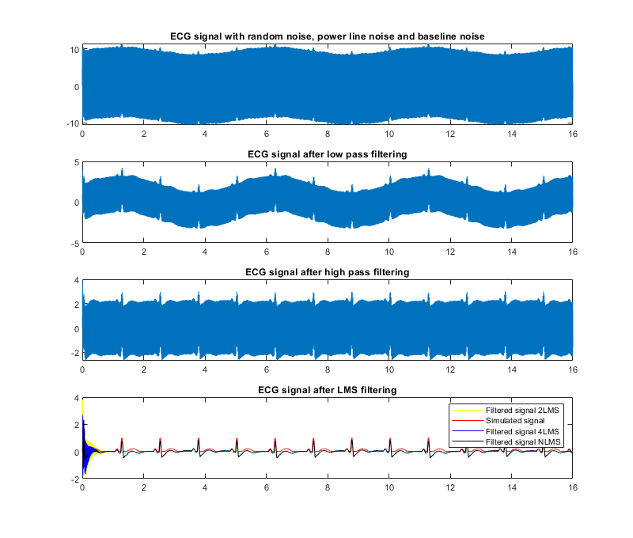

Contents
%%Filter 50/60 Hz signal from ECG simulated data %filter options LPF_cutoff = 25; %ECG signal band => between 10 Hz and 25 Hz HPF_cutoff = 1; % Baseline wander frequency is lower than 1Hz. Can be higher in special conditions (running) LMS_conv = 0.009; % noise amplitudes Noise_amplitude = 0.020; Mains_interference_amplitude = 8; Baseline_wander_amplitude = 1; f_baseline = 0.2; f_interference = 50.5; % power line frequency Fs = 50 * 16; %sample rate dt=1/Fs; t=0:dt:16; ref = sin(2*pi*f_interference*t); f_offset1 = 0; f_offset2 = 0; interference_noise = Mains_interference_amplitude * sin (2*pi*(f_interference-f_offset1)*t) + ... Mains_interference_amplitude * 0.2 *sin(2*pi*(f_interference-f_offset2)*t); Hearth_rate = 75; ECG_period = Hearth_rate/60; QRS_complex_duration = 0.08; % QRS complex duration is between 0.08 - 0.12 seconds PR_duration = 0.12; % PR duration is between 0.12 -0.20 seconds QT_duration = 0.40; % QT duration is between 0.35 - 0.43 seconds QRS_t = 0:dt:QRS_complex_duration; QRS_f = 1/QRS_complex_duration; QRS_waveform = sin(2*pi*QRS_f/2*QRS_t).*(QRS_t<=QRS_complex_duration); PR_t = 0:dt:PR_duration; PR_f = 1/PR_duration; PR_waveform = 0.2*sin(2*pi*PR_f/2*PR_t).*(PR_t<=PR_duration); QT_t = 0:dt:QT_duration; QT_f = 1/QT_duration; QT_waveform = 0.2*sin(2*pi*QT_f/2*QT_t).*(QT_t<=QT_duration); %repeat QRS_waveform according to ECG_period. time_location = double(0==mod(t,ECG_period)); ECG_PR = conv(circshift(time_location,[0, -ceil(PR_duration/dt + PR_duration/(2*dt))]), PR_waveform); ECG_PR = ECG_PR(1:length(ECG_PR) - length(PR_waveform) + 1); ECG_QT = conv(circshift(time_location,QT_duration/(2*dt)), QT_waveform); ECG_QT = ECG_QT(1:length(ECG_QT) - length(QT_waveform) + 1); ECG_waveform = conv(time_location, QRS_waveform); ECG_waveform = ECG_waveform(1:length(ECG_waveform) - length(QRS_waveform) + 1) + ECG_PR + ECG_QT; ECG_waveform_noise = ECG_waveform + Noise_amplitude * randn(size(t)); ECG_waveform_interference = ECG_waveform_noise + interference_noise; ECG_waveform_final = ECG_waveform_interference + Baseline_wander_amplitude * sin(2*pi*f_baseline*t); [b,a] = butter(2, LPF_cutoff/(Fs/2)); %freqz(b,a) ECG_LPF = filter(b, a, ECG_waveform_final ); [b,a] = butter(2, HPF_cutoff/(Fs/2),'high'); %freqz(b,a) ECG_HPF = filter(b, a, ECG_LPF ); b1 = 0; b2 = 0; %Fs = 60*16 = 960 hz = 1.04 ms % 16.66 ms/2 = 8.33 ms => 4 samples for 90 degree phase shift %Fs=50*16 = 800 hz = 1.25 ms % 50 hz -> 20ms => 20/1.25 = 16 samples/cycle => 16/4 = 4 -> 4 samples % represents 90 degree phase shift % narrow band filter that works only with frequencies near f_interference % 2 tap filter - adjust b1 and b2 coefficients for in phase ref(i) and 90 degree % phase shift ref(i-4) signal
LMS 2 tap
if interference signal from ECG_HPF would be in phase with the ref signal then b2 would be 0 and b1 would be Mains_interference_amplitude/ref_amplitude.
for i=5:length(t) ECG_out(i) = ECG_HPF(i) - (b1*ref(i) + b2*ref(i-4)) ; b1 = b1 + LMS_conv*ECG_out(i)*sign(ref(i)); b2 = b2 + LMS_conv*ECG_out(i)*sign(ref(i-4)); %store some variables phase_signal(1,i) = ref(i); leading_signal(1,i) = ref(i-4); coef(3,i) = 0.4*ref(i) + -0.9*ref(i-4); coef(2,i) = b2; coef(1,i) = b1; end
LMS 4 taps
a1 = 0; a2 = 0; a3 = 0; a4 = 0; for i=13:length(t) ECG_4tap(i) = ECG_HPF(i) - (a1*ref(i) + a2*ref(i-4) + a3*ref(i-8) + a4*ref(i-12)); a1 = a1 + LMS_conv*ECG_4tap(i)*(ref(i)); a2 = a2 + LMS_conv*ECG_4tap(i)*(ref(i-4)); a3 = a3 + LMS_conv*ECG_4tap(i)*(ref(i-8)); a4 = a4 + LMS_conv*ECG_4tap(i)*(ref(i-12)); end
LMS n taps
n = 20; h = zeros(1,n+1); offset = 0:-1:-n; for i=n+1:length(t) % keep a history buffer buffer = ref(i+offset); ECG_ntap(i) = ECG_HPF(i) - dot(h,buffer); h = h + LMS_conv * ECG_ntap(i) * buffer; end
smooth data - not mandatory, just for eye comparation
ECG_out = smoothdata(ECG_out); ECG_4tap = smoothdata(ECG_4tap); ECG_ntap = smoothdata(ECG_ntap);
plot
plot(t,phase_signal(1,:)); hold on plot(t,leading_signal(1,:)); hold on plot(t,leading_signal(1,:)); xlim([0 0.5]) ylim([-2 2]) legend('ref(i)', 'ref(i-4)');
%evolution of b1 and b2 coeficients plot(t,ref,'b'); hold on plot(t,coef(3,:)); xlim([0 0.5]) ylim([-2 2]) % TBD - a more generic filter which works even with % ref = sin(2*pi*f_interference*t) + A*sin(2*pi*2*f_interference*t); where % A is different from 0 value subplot(4,1,1); plot(t,ECG_waveform_final); title("ECG signal with random noise, power line noise and baseline noise"); subplot(4,1,2); plot(t,ECG_LPF); title("ECG signal after low pass filtering"); subplot(4,1,3) plot(t,ECG_HPF); title("ECG signal after high pass filtering"); subplot(4,1,4); plot(t,ECG_out,'y'); title("ECG signal after LMS filtering"); hold on plot(t,ECG_waveform,'r'); hold on plot(t,ECG_4tap,'b'); hold on plot(t,ECG_ntap,'black'); legend('Filtered signal 2LMS','Simulated signal', 'Filtered signal 4LMS', 'Filtered signal NLMS'); set(gcf,'Position',[380 80 800 680]); saveas(gcf,'ECG_2_tap_filter.png');